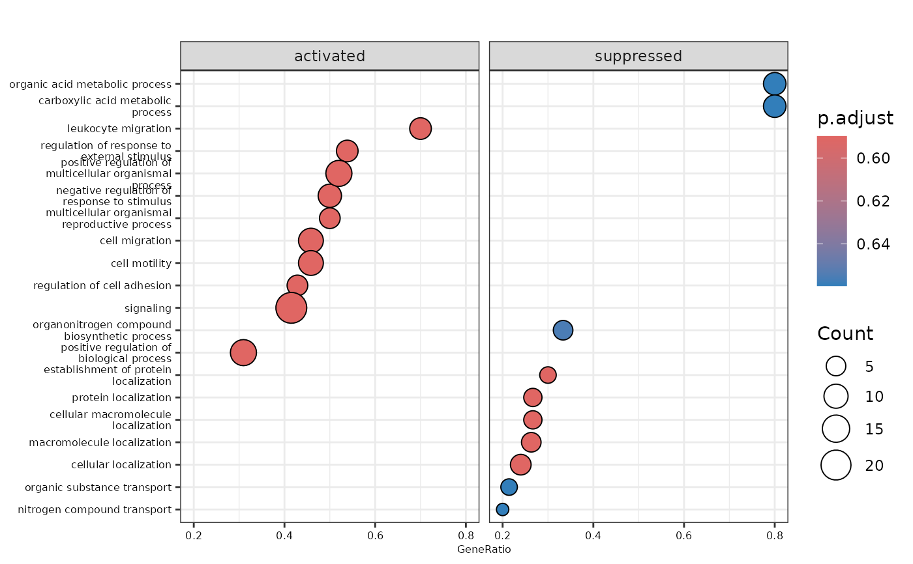
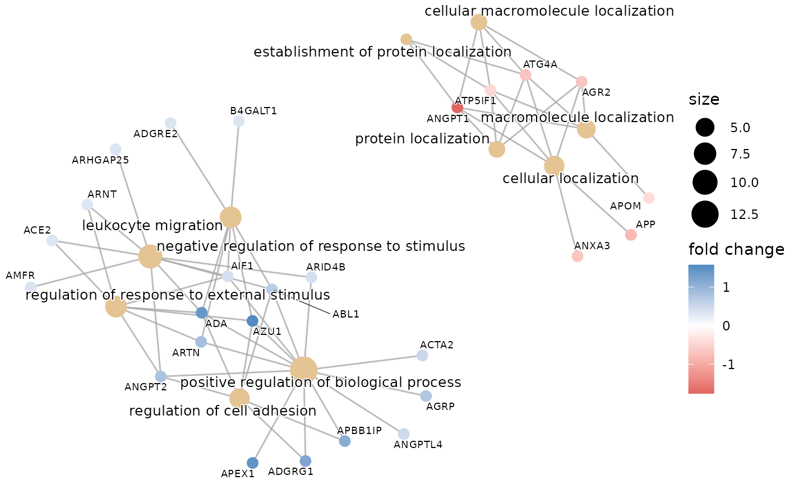
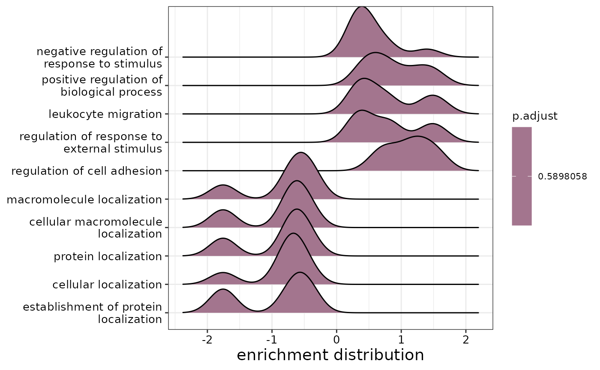
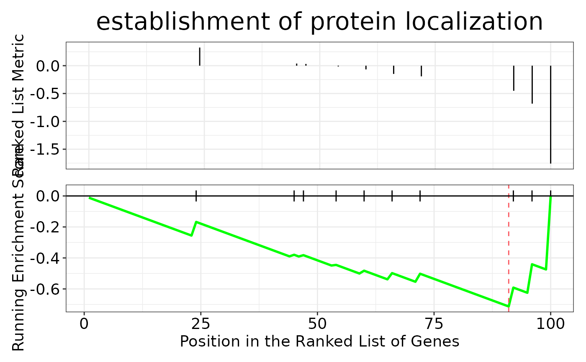

This function performs gene set enrichment analysis (GSEA) using the clusterProfiler package. It also produces useful plots to visualize the results.
Usage
do_gsea(
de_results,
database = c("KEGG", "GO", "Reactome"),
background = NULL,
pval_lim = 0.05,
ncateg = 10,
fontsize = 10
)Arguments
- de_results
A tibble containing the results of a differential expression analysis.
- database
The database to perform the GSEA. It can be either "KEGG", "GO", or "Reactome".
- background
A character vector containing the background genes.
- pval_lim
The p-value threshold to consider a term as significant.
- ncateg
The number of categories to show in the plots.
- fontsize
The font size for the plots.
Details
The ontology option used when database = "GO" is "ALL". When Reactome is used, background functionality is not available.
Examples
# Run Differential Expression Analysis and extract results
de_res <- do_limma(example_data, example_metadata, wide = FALSE)
de_results <- de_res$de_results$AML
# Run GSEA with Reactome database
do_gsea(de_results,
database = "GO",
pval_lim = 0.9, # Remember that the data is artificial
ncateg = 10,
fontsize = 10)
#>
#>
#> 'select()' returned 1:1 mapping between keys and columns
#> using 'fgsea' for GSEA analysis, please cite Korotkevich et al (2019).
#> preparing geneSet collections...
#> GSEA analysis...
#> leading edge analysis...
#> done...
#> $enrichment
#> #
#> # Gene Set Enrichment Analysis
#> #
#> #...@organism Homo sapiens
#> #...@setType BP
#> #...@keytype ENTREZID
#> #...@geneList Named num [1:100] 1.57 1.45 1.4 1.2 1.11 ...
#> - attr(*, "names")= chr [1:100] "566" "328" "100" "9289" ...
#> #...nPerm
#> #...pvalues adjusted by 'BH' with cutoff <0.9
#> #...262 enriched terms found
#> 'data.frame': 262 obs. of 11 variables:
#> $ ID : chr "GO:0045184" "GO:0048585" "GO:0051641" "GO:0008104" ...
#> $ Description : chr "establishment of protein localization" "negative regulation of response to stimulus" "cellular localization" "protein localization" ...
#> $ setSize : int 10 18 25 15 15 19 42 10 13 14 ...
#> $ enrichmentScore: num -0.713 0.672 -0.553 -0.614 -0.614 ...
#> $ NES : num -1.72 1.68 -1.66 -1.66 -1.66 ...
#> $ pvalue : num 0.01764 0.00381 0.01233 0.04138 0.04138 ...
#> $ p.adjust : num 0.59 0.59 0.59 0.59 0.59 ...
#> $ qvalue : num 0.573 0.573 0.573 0.573 0.573 ...
#> $ rank : num 10 23 10 10 10 14 15 19 23 9 ...
#> $ leading_edge : chr "tags=30%, list=10%, signal=30%" "tags=50%, list=23%, signal=47%" "tags=24%, list=10%, signal=29%" "tags=27%, list=10%, signal=28%" ...
#> $ core_enrichment: chr "ATP5IF1/ATG4A/ANGPT1" "ADA/ANGPT2/ABL1/AIF1/ARID4B/AMFR/ACE2/ARHGAP25/ARNT" "ATP5IF1/ANXA3/AGR2/ATG4A/APP/ANGPT1" "ATP5IF1/AGR2/ATG4A/ANGPT1" ...
#> #...Citation
#> T Wu, E Hu, S Xu, M Chen, P Guo, Z Dai, T Feng, L Zhou, W Tang, L Zhan, X Fu, S Liu, X Bo, and G Yu.
#> clusterProfiler 4.0: A universal enrichment tool for interpreting omics data.
#> The Innovation. 2021, 2(3):100141
#>
#>
#> $dotplot

#>
#> $cnetplot

#>
#> $ridgeplot
#> Picking joint bandwidth of 0.198

#>
#> $gseaplot

#>